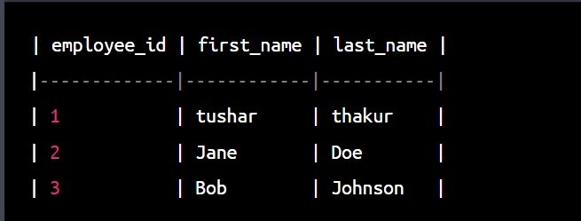

- 8. GROUP BY used in a Table:
The GROUP BY clause is used to group rows that have the same values into summary rows, like totals or counts. It is used with aggregate functions, such as SUM, COUNT, MAX, MIN, and AVG, to calculate summary information for each group.
SELECT department, AVG(salary) FROM employees GROUP BY department;
- 9. WHERE CLAUSE used in a Table:
The WHERE clause is used to filter rows based on specific conditions. It allows you to specify which rows should be returned by a query based on specific criteria.
SELECT employee_id, first_name, last_name, salary FROM employees WHERE salary > 50000;

- 10. ORDER BY used in a table:
ORDER BY is a clause in SQL that is used to sort the results of a query in ascending or descending order based on one or more columns.
-
SELECT first_name, age, salary FROM employees ORDER BY salary ASC;
